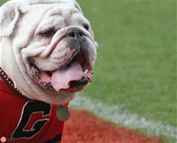

University of Georgia

Ussery, Brian E. “UGA VI.” WikiMedia Commons, 28 Aug. 2012, commons.wikimedia.org/wiki/File:Uga_VI.jpg.
I now attend the University of Georgia in Athens. I am a Marketing Major applying to the Terry College of Business in the spring and I also have a Communications Minor. I lived in Russell Hall last year and I had a wonderful freshman year. I noticed immediately how every teacher here truely loves what they teach and I think that is really cool. I have had the opportunity to learn so much here of which I am so greatful. I have really taken an interest in my communications and economic classes especially. College is allot more work then highschool but I am managing to handle it. One of my favorite places to study is that cool room thats hidden away in the Library.
I also have met a ton of absolutely wonderful people in my time here at college. My hallmates last year ended up becoming some of my best friends. I am still friends with the girls I hung out with at orientation, almost a year and a half ago now also. I am a member of Greek Life through Kappa Alpha Theta and I do have many friends through that but I also have a lot of friends in other sororities and non-Greek life too. It is fun this year to live with all my theta friends in the house. I feel as if I have become a lot closer with them. The food is also much better this year then last. Our cook Jen is fantastic. I am glad to have my time with Bolton over with.
A Table of Things I Like and Dislike about UGA
| Like | Dislike |
|---|---|
|
|
Click here to go back to the home page Home